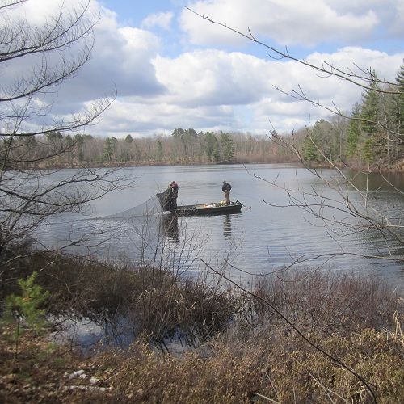

 Inch Lake is a 12.5 ha inland lake in northern Wisconsin that has been managed as catch-and-release for all species since 2006. Researchers at Northland College have monitored fish populations in Inch Lake since 2007. The total lengths (inches) and weights (g) for subsamples of several species of fish collected from Inch Lake in May of 2007 and 2008 are recorded in InchLake2.csv (view, download, meta). Use these data to answer the following questions.
Complete this Data Manipulation exercise to create the required data.frames used in the following questions.
Save the script from this exercise as these data will be used in these weight-length relationhip (A and B) and these condition (A and B) exercises.
from Derek H. Ogle , created 01-Oct-15, updated 07-Nov-15, Comments/Suggestions.